Maraschino
Art direction board · Case study
Maraschino
Art direction board · Case study

A mood board that writes code
Maraschino is a design tool I built to improve my own AI workflow. You drop your inspiration images into the tool and add them to the dot-grid to make a mood board like an art director would do at the beginning of a project. Pin exactly what you like on your inspiration images, circle them, write a note, and rate each reference with cherries to add weight. Then you press Compile and watch the magic happen. The board turns into a brief and an extracted design file an AI coding tool can follow, along with generated image stills derived from everything you just pointed out.

The board is a very light slate blue with a dot grid. Every image sits in a polaroid frame: a thin white border and a deep chin. The frame gives it style and the chin is where the cherries live. Pan, zoom and select work exactly like Figma, because that is the muscle memory the people I built this for already have.
Seven pins. That is the whole budget.
Each pin type is a hue, and a pin head is 24px on screen. Past seven hues they stop separating, so the rail is capped at seven and adding a type means spending one. Hover flips out the name; the keys 1 to 7 arm the next pin. This one is live.

Pins carry coordinates.
Hover a pin and three bubbles split out of it: note, draw around it, delete. The lasso is a freehand loop in the pin's own hue, and its boundary is the crop the model gets. The note rides along with the crop. That is the whole trick: the model sees the pose you circled and the four words you wrote about it, not fifty whole images.
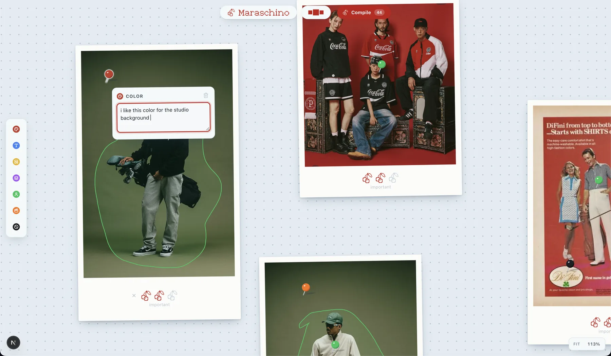
One image, several opinions.
The same photo can hold a Subject pin for the pose and a Color pin for the backdrop. Each becomes its own crop, its own note, its own line in the extraction. A black Avoid pin does the opposite job: never this.
Weight is per image, zero to three cherries in the chin, labeled noted, important, non-negotiable. The cherries are the quantity and the words are the judgement.
Images arrive before they are placed.
Imports land in a tray across the top, a holding shelf you drag from one image at a time. Thumbnails magnify under the pointer with distance falloff so you can read one without placing it. No labels: the thumbnail is the label. Run your pointer across this one.

Everything stays on this computer.
Boards, images, pins, briefs and stills live in the browser's IndexedDB. There is no account and no upload step. One board is on the table; the rest wait on a shelf with their camera position remembered.
A small board to play with.
The same controls as the app, ported from its source, with the references from my own board in the tray. Nothing here is saved.
Pins in, brief out, photographs after.
A board knows what it is for, and that routes everything downstream. The first profile is Brand & Campaign: the compile produces a brief.md and the proof is a generated photograph. A Product & UI profile that compiles to a design.md for coding tools has its slot reserved.
Pin
Typed pins on the exact things you like. Lasso the region, write the note, weight the image.
Card
Six questions before compile: what you are making, the product and its files, who is in frame, where it lives, the era, what must never appear.
Crop & extract
Each pin becomes a crop with its note attached. A vision model reads them in batches and returns structured findings per pin.
Synthesize
One call turns the findings into a brief: concept, palette, light, wardrobe, a shot list, and a Never list seeded by the Avoid pins.
Proof
The Stills tab makes the shot list on an image model with your product files as references. Wrong still? Fix the pins and recompile.

I gave the AI fifty reference images and it ignored what I liked about all of them.
That sentence is the project. Every designer working with image models or AI coding tools has done the same thing: gather a mood board, drop the whole pile into the context window, and get back something that averages the pile. The model's attention is spread across everything in every image. The one thing you actually liked, the way a collar sits, the green of one studio wall, is a rounding error.
Pinterest collects. Kive tags. Nothing compiles. A mood board is a set of unspoken preferences, and the preferences are exactly the part that never makes it into the prompt. Maraschino makes you speak them, one pin at a time, and translates them into a document a machine can act on.
I built it for myself first. I run a small apparel brand and I wanted campaign stills that looked like my references without hiring a photographer or writing three paragraphs of prompt every time. The tool had to beat the fastest alternative, which is me typing that paragraph. So the first thing I built was the test, not the interface.
Same taste, different grammar. The brief won three out of three, blind.
Same 118 pins, same three shots, same image model. Arm A got a direction paragraph I wrote plus a shot line. Arm B got the compiled brief. I judged the pairs blind with left and right randomized.
A collage, every time.
All three shots came back as mood-board sheets: many small images, not a photograph. Each one also invented garbled brand wordmarks, breaking the board's own Avoid rules. The paragraph described a list of references, so the model rendered a list.
One scene, one photograph.
Single, coherent campaign frames with the pinned palette, the film grain, the warm tungsten and golden-hour light, the period wardrobe. The brief describes one scene with the taste encoded inside it.
Then the loop had to hold inside the app, with no hand on the pipeline. The screens below are the compile rail during one run on the same board: extraction, brief, stills.
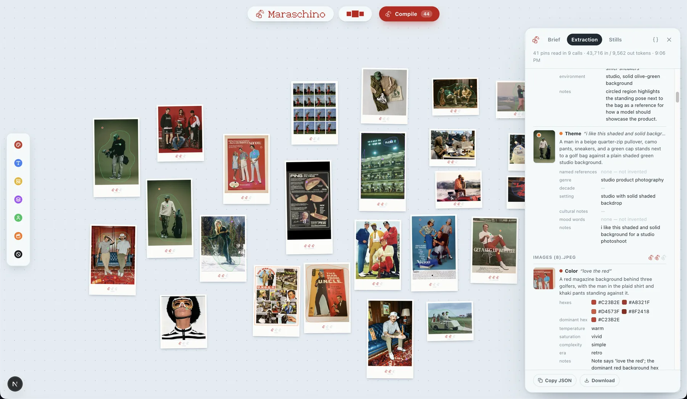
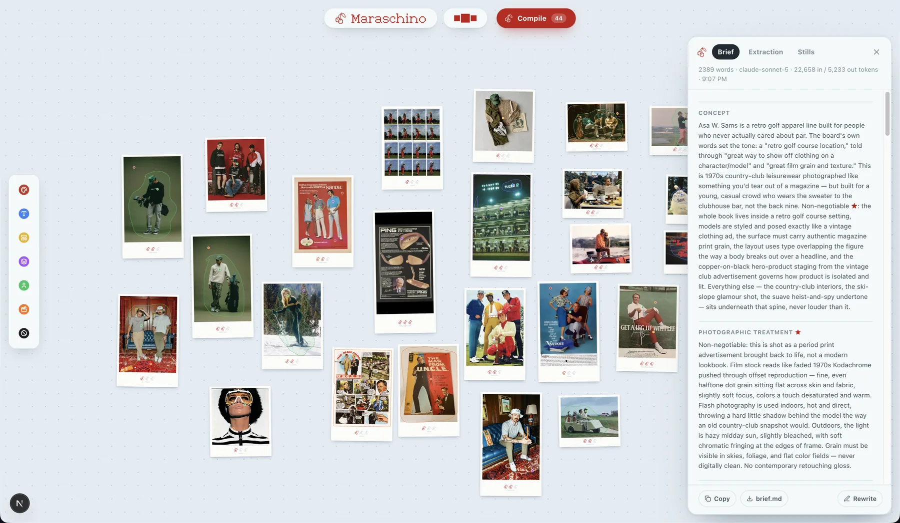
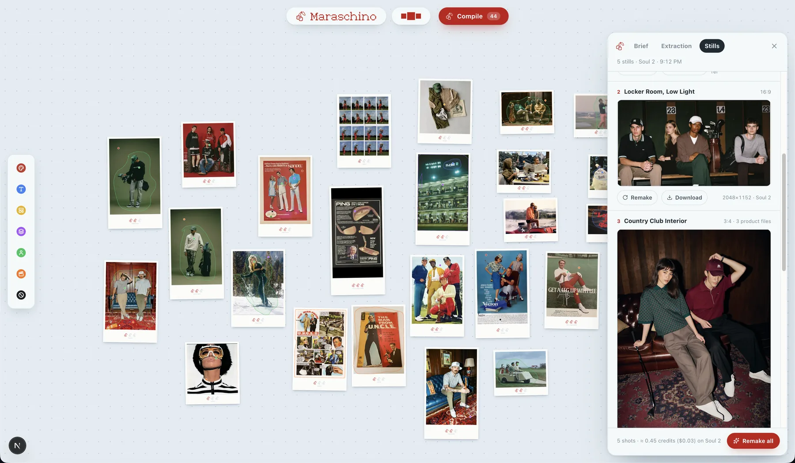
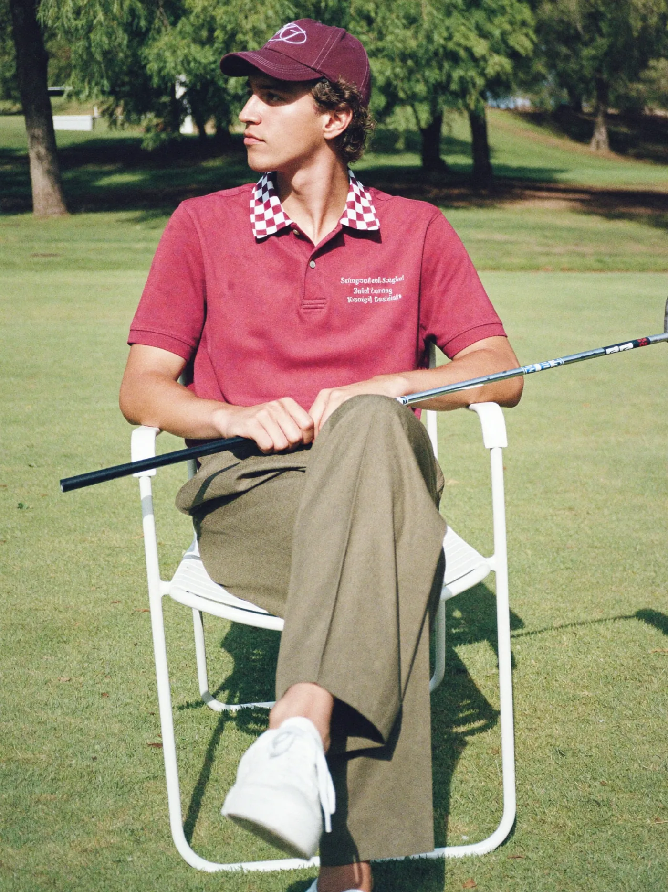
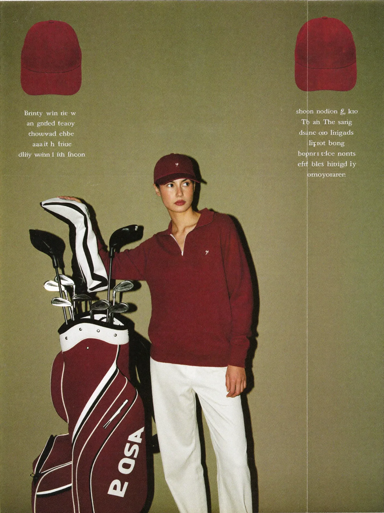
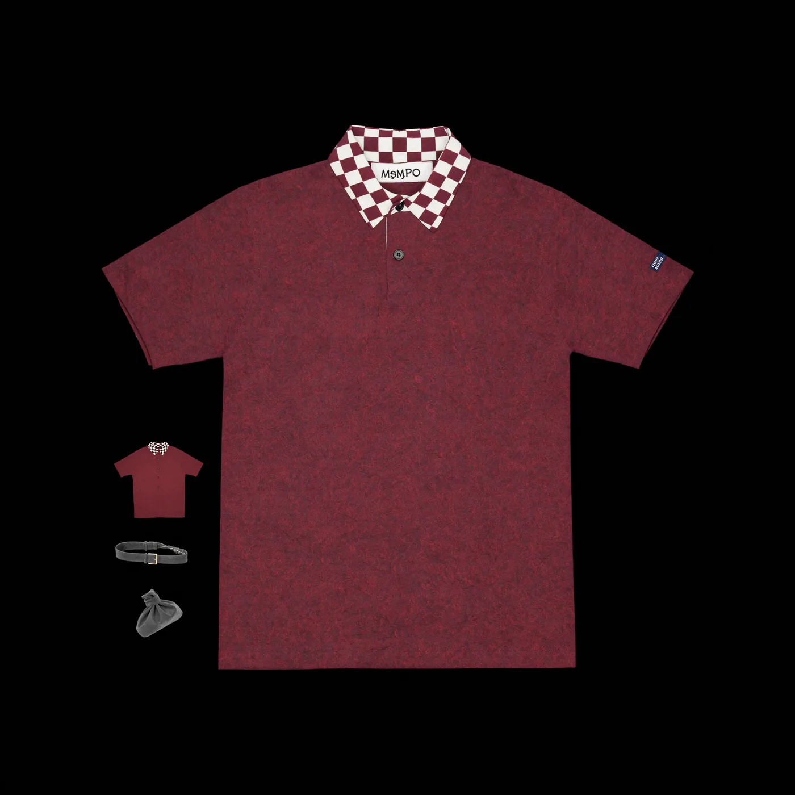
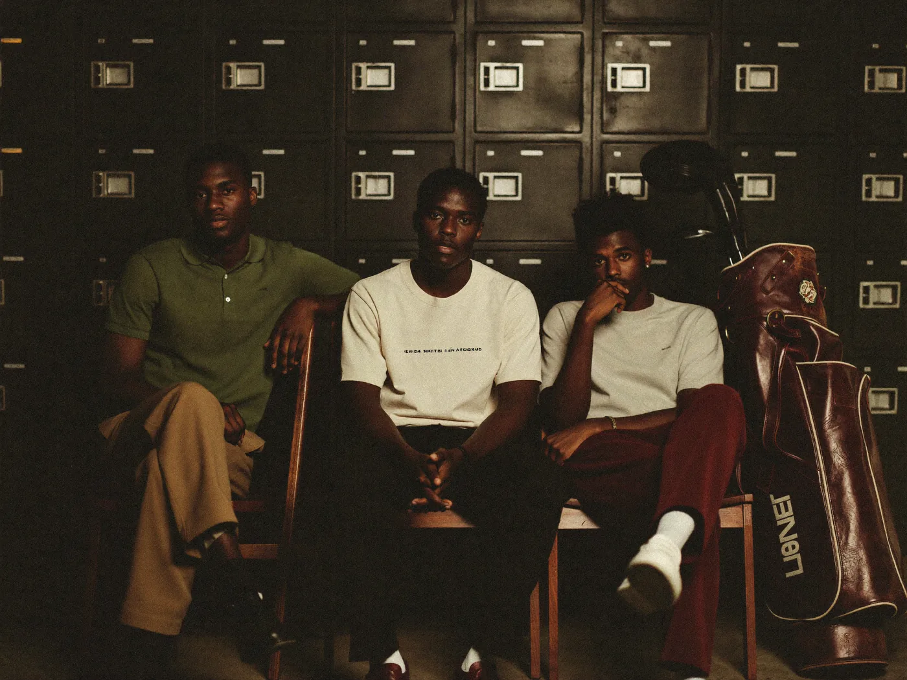
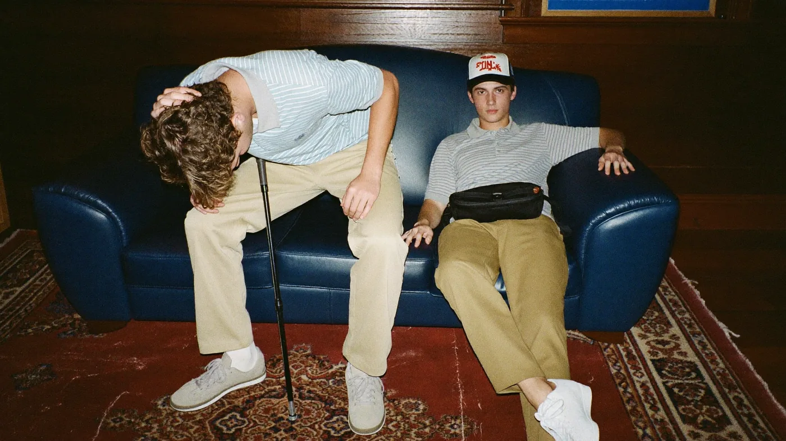
These five photographs are AI-generated by Maraschino from the brief above, on Higgsfield Soul 2 at 1080p, with my own cap, tee and polos passed as product references. The set cost about 0.45 credits. Nobody wrote a prompt.
| Run | What it tested | Result | |
|---|---|---|---|
| Eval 1 | Landing page built from the brief vs. from raw images, judged blind. | The instrument broke: both arms got contaminated. One durable number survived: the compiled brief was 35% cheaper to act on in tokens. | Inconclusive |
| Eval 2 | Three campaign stills, my paragraph vs. the compiled brief, blind. | Brief swept 3/3. The paragraph produced collages with fake wordmarks; the brief produced photographs. | Passed |
| Eval 3 | Twelve stills straight off the first real compile of the board. | 12/12 lived in the board's world; 8/12 clean of the Never rules; 4 rendered text. Text became a rule. | Passed |
| Eval 4 | First brief written inside the app, with my own products pinned as references. | A usable brief on the first try. Three contradictions found and turned into compiler rules. | Passed |
| Eval 5 | The app's own Generate step against the image API. | Parse, estimate, upload, submit, poll, download. Five stills for three cents. | Passed |
| Eval 6 | The whole cycle, run by me in the rail with nothing driven from outside. | Board in, photographs out. 52 pins, 19 product files, brief, five stills, three minutes. | Passed |
The parts I would defend in a review.
Glass on the board, flat in the rail.
A pin head is 24px on screen and its whole job is hue separation. Full gloss puts a white hotspot over about 40% of a head that small and drags every hue toward white, so red and orange stop reading as different pins. Flat matte kept the hue but read as a sticker, not an object.
Tested the finishes across 16 to 48px on real board imagery and landed between the two: a glass ball-head with one small, tight specular. The hue survives down to 20px and the pin still reads as a thing pushed into the board. The rail is the opposite call. There the seven types are flat colour discs carrying an icon, because in a toolbar the icon does the identifying and a highlight would only compete with it.
Two renderings of the same seven colours. It holds because they never sit side by side at the same size: the rail is where you choose, the board is where the choice lands.
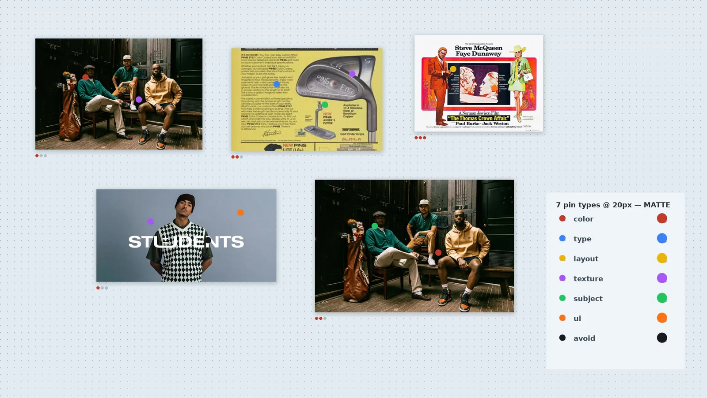
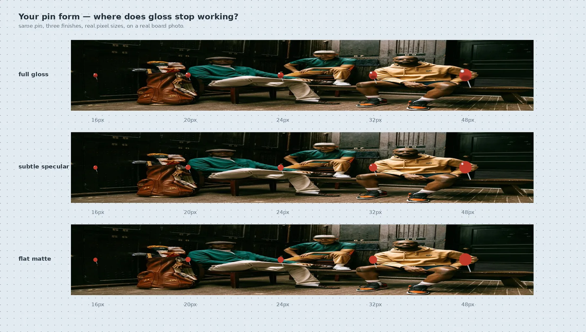
A cool board, so warm references pop.
The first direction was warm paper, which is what a studio wall looks like. On real boards it blended into the imagery, which is overwhelmingly warm, and it drifted toward cork-board kitsch.
Very light slate blue with a regular grid of translucent slate dots, edge to edge. Warmth lives entirely in the cherry red, the pins and the imagery. Pale blue and cherry is also a pairing nobody else in the category owns; the 2026 AI-tool house style is neutral gray.
No paper grain, no texture on the canvas. Physicality is carried by the objects on the board, roughly 5% skeuomorphism and no more.
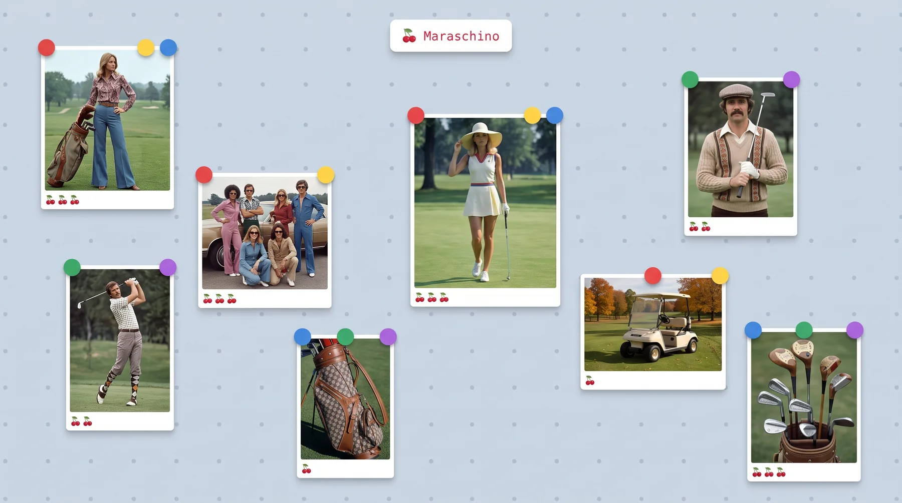
Cherries in the chin, one weight per image.
The first version put weight inside each pin's popover and mirrored the maximum into the frame's chin. Two cherry rows on screen for one idea read as duplication, and it asked you to remember a scale instead of read one.
Zero to three cherries centred in the polaroid chin, with the word under them: noted, important, non-negotiable. The row is the control. Clicking the lit cherry clears it back to zero, so a reference can sit on the board without a claim attached.
You can no longer say the colour here is non-negotiable but the layout is only noted on a single image. I used that distinction once. Accepted for the simpler board; it comes back if compile quality asks for it.
Borrow the muscle memory, not the look.
The people this is for live in Figma all day. Any canvas that pans, zooms or selects differently costs them a week of wrong reflexes, and a sticky pin tool left a stray pin on every click.
Figma's model outright: V and H, space to hand, zoom anchored to the cursor, shift-1 to fit, command-Z. Placing a pin is one-shot like Figma's shape tools, and 1 to 7 rearms the rail from the keyboard. Luma's interface was the reference for quiet chrome and the right rail as a live plan that ticks off each pin as it is extracted.
Took the restraint, refused the temperature. Motion here is springy, the pins throw real shadows under one shared light, and the board should look worked on, because it holds inputs, not outputs.
Designed and built by one person, with the docs as the contract.
I wrote the spec, the compiler design, the decision log and the eval protocol before the first component, then built the app with Claude Code against those documents. Every behaviour change updates its doc in the same commit. The decision numbers on this page are real; D-021 is a file you can open.
Next.js · TypeScript · Tailwind
App Router, strict mode. Tailwind is driven by Maraschino's own token file, the same tokens that style this page.
Zustand · Dexie · IndexedDB
Local-first. Images downscale on import so a fifty-image board stays fast; briefs and stills are blobs keyed to the board.
Anthropic API, vision
Two stages: structured extraction per crop, then one synthesis call to the brief. Streamed server-side so a 55-second brief never drops.
Higgsfield Cloud API
One adapter per image model. Estimate, upload product references, submit, poll, download, size from the bytes.
Springs, one light, safe sectors
Dock magnification, liquid pin menus, cursor-anchored zoom, hover intent with dwell and grace. All off under reduced motion.
Evals before UI
Six recorded runs. The compiler had to beat me typing a paragraph before it earned an interface.